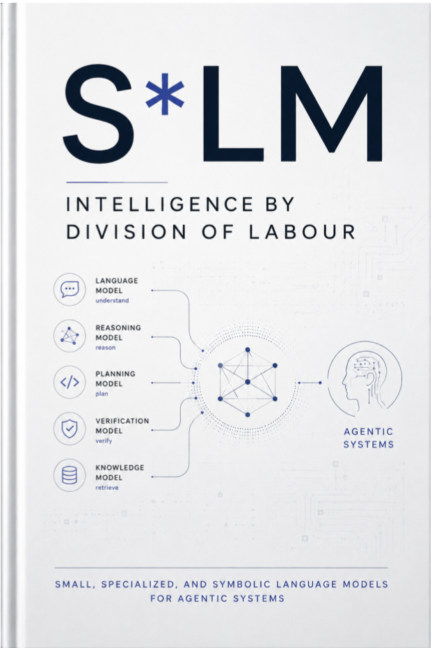

AI Systems & Infrastructure · Axiologic Research Editions
S*LM
Intelligence by Division of Labour
Suppose the next advance in agentic AI is not one model that does everything, but a runtime that knows which component should do each thing. Enter a research programme built around minimum sufficient generality, explicit contracts, independent checks, and selective escalation.
Beyond the single-model story
Agentic systems interpret requests, identify entities, select tools, retrieve state, plan, calculate, verify and explain. Those roles have different requirements. Some need broad linguistic knowledge; others are bounded classifications, exact symbolic operations or private local tasks.
S*LM uses the star as a wildcard for small, specialized and symbolic components. It does not rename every solver a language model. It asks how compact neural models, constrained representations, deterministic software and selective calls to general models can form a more efficient and inspectable system.
Division of labour with guardrails
How much generality does a role need? Routing, extraction and function calling may reward specialization more than open-ended fluency.
Where should uncertainty go? Bounded components need calibrated escalation rather than confident failure outside their competence.
Who holds authority? Planning and verification can be distributed while permissions remain outside probabilistic text generation.
The research question is not whether small models replace large ones, but where generality actually earns its cost.
Survey and research programme
The book connects current compact-model families, tool-use datasets and neural-symbolic architectures to an engineering programme for agentic systems. It marks strong evidence, architectural synthesis and unresolved evaluation questions separately.